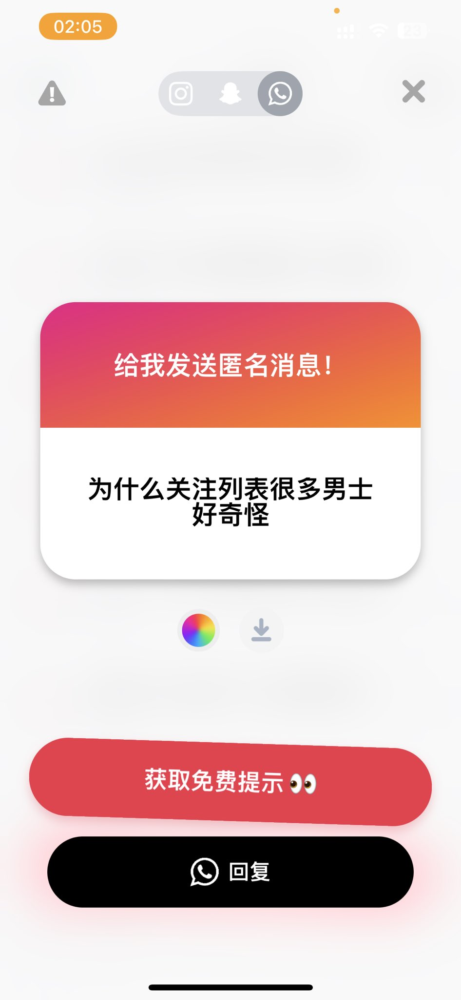

查拉图斯特拉.
@DQadopt
好吧有人想骂我也没有理由啊，一我没瓜不干坏事，二我不主动攻击别人，三我不挑起任何争论和我有异议我只会觉得无聊懒得回你又影响不了我，四我只是个爱看虐杀人类的普通人罢了

查拉图斯特拉.
@DQadopt
说实话我一直认为我的账号定位是碎碎念，只是莫名其妙有这么多粉丝，我不是女同博主也不是od博主也不是自残博主，我就是一个碎碎念的，惨圈互关我不管男女只要合眼缘不发男性生殖器就可以，只是网友而已，那我互关还有很多跨儿呢🏳️⚧️🏳️⚧️🏳️⚧️而且我的推特社交和受众人群出奇的干净啊，提问箱评论区也没人骂我 https://t.co/MuuEEvbBAg